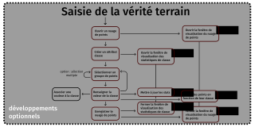
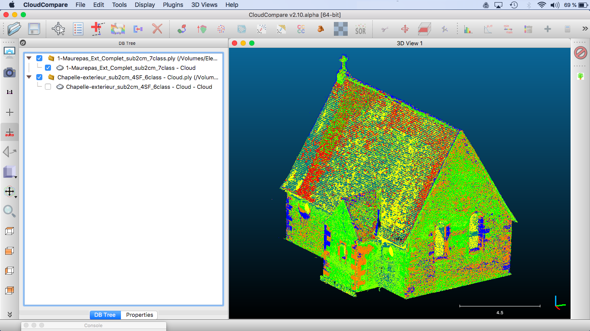

Classification 3d multispectrale
Emile Blettery, Emmanuel BOURASSIN, Guillemette FONTEIX
Projet encadré par Marc POUPÉE - février-mai 2018
Projet développement
Classification 3d multispectrale
Demande & contexte
Nuages issus de techniques d'acquisition mixtes

Objectif et contraintes
Choix techniques
Grandes étapes
Diagramme fonctionnel
Diagramme fonctionnel
Diagramme fonctionnel
Interface du plugin
Qt
Interface

Interface (2)

Interface (3)

Fonctionnement
N'hésitez pas à consulter le guide utilisateur et à regarder la vidéo tutoriel que nous avons réalisée pour facilement prendre en main le plugin qRIMAC !
Transfert d'attributs
Réutilisation du module InterpolateFromAnotherEntity
Efficacité due à l'utilisation des octrees pour la gestion de la proximité entre les points.
Classification
Développement intégral d'une méthode des k-means adaptée à des nuages composés d'un nombre quelconque de champs scalaires.
La souplesse de fonctionnement de cet algorithme le rend transposable à d'autres utilisations.
Algorithme des k-means
> Explication de l'algorithme
Résultats
Selon les champs scalaires utilisés pour la classification, les résultats obtenus font apparaître des phénomènes différents
Attribut de réflectance laser
Attribut de densité de surface
Attributs laser et densité de surface
RVB + laser, classification 6 classes
RVB, 7 classes
Gestion de projet
Organisation

Diagramme de Gantt

Perspectives du projet RIMAC
Prolongement
Le code développé l'est sous licence open source, le GitHub est public et une documentation développeur a été écrite afin de permettre une réutilisation du code aisée.
Amélioration du plugin
Des améliorations peuvent être faites à notre plugin. En particulier, de nouveaux algorithmes de classification peuvent être implémentés et ajoutés pour compléter les fonctionnalités existantes.
Le module de saisie de vérité terrain dont l'interface et les premières fonctionnalités ont été implémentés peut être terminé pour permettre d'ajouter de la classification supervisée au plugin.
Nos sincères remerciements
vont dès à présent à :
Marc POUPÉE,
Bruno VALLET,
Daniel GIRARDEAU-MONTAUT
et Iris DE GÉLIS